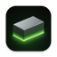
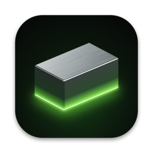

Built for Metal
The Xbox's GPU commands are translated straight to Metal, no translation layers. Games render at up to 4× native resolution.

Ingot
Original Xbox games on your Mac.
Native on Apple silicon, rendered with Metal.
Free and open source · macOS 14 or later · Apple silicon (M1 or newer)
The Xbox's GPU commands are translated straight to Metal, no translation layers. Games render at up to 4× native resolution.
Game code is recompiled to ARM64 on the fly by a FEX-based JIT, with Xbox memory mapped directly onto Apple silicon's 16 KiB pages.
Ingot reimplements the Xbox kernel itself. No BIOS, MCPX ROM or hard disk image to hunt down, just your game.
A SwiftUI game library with cover art, controller support and Core Audio sound. Double-click a game to play.
~/Documents/xbox, or add a folder in Settings.Ingot doesn't include any games or copyrighted Xbox software. Use images dumped from discs you own.